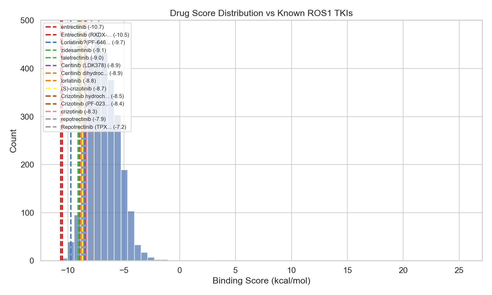
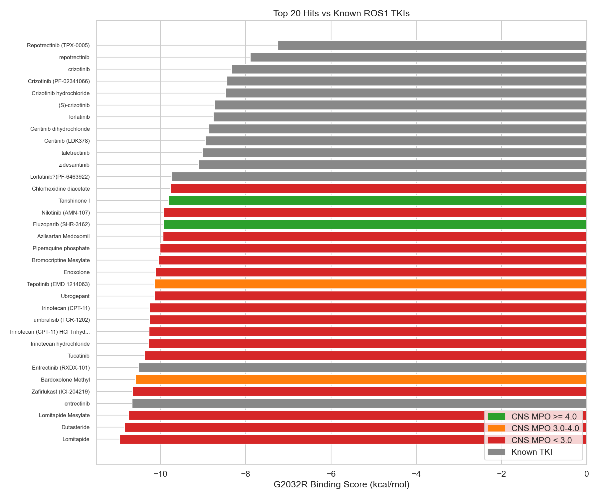
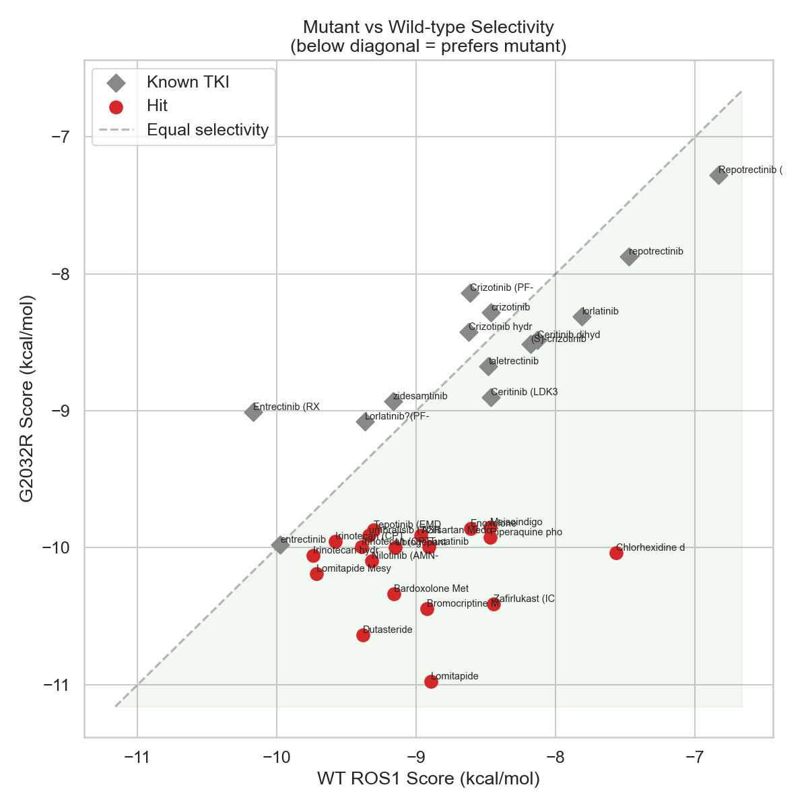
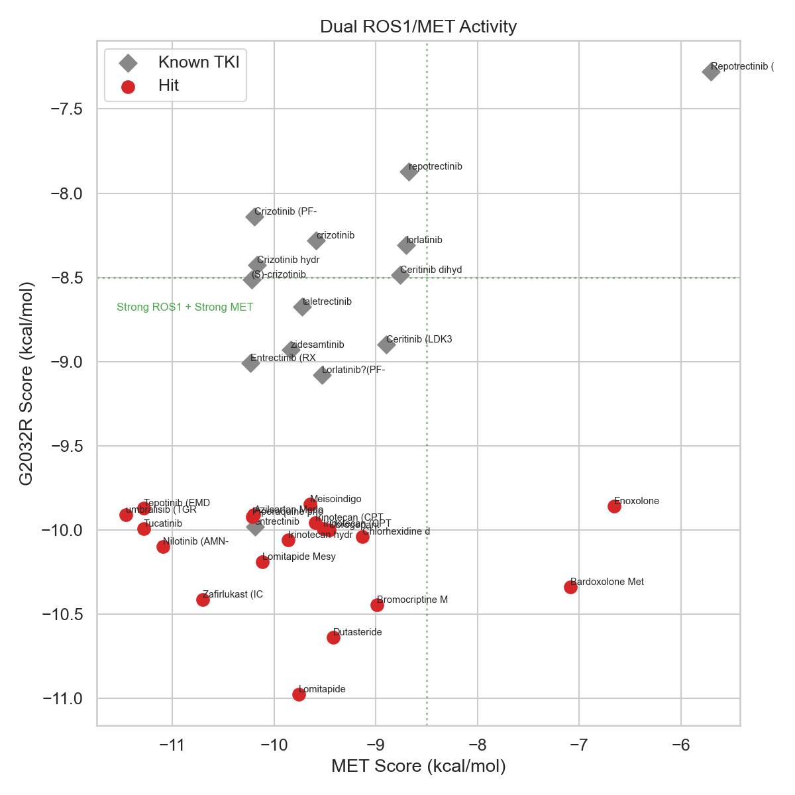
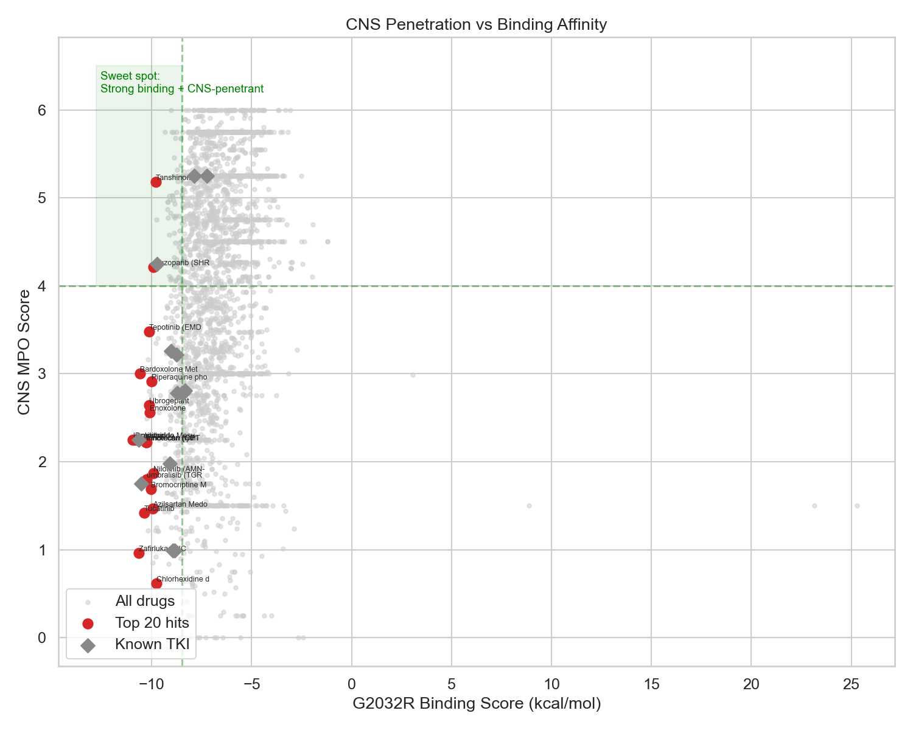

Computational docking of 2,800 FDA-approved drugs to identify potential off-label
candidates for ROS1-positive NSCLC with anticipated G2032R resistance.
Reference standard: Lorlatinib (current therapy).
Date: March 31, 2026
This screen was designed for a specific clinical scenario:
Drug repurposing (repositioning) seeks to identify new therapeutic uses for existing FDA-approved drugs. The advantages are significant: known safety profiles, established manufacturing, and the potential for immediate off-label use under physician discretion3.
The G2032R "solvent-front" mutation in the ROS1 kinase domain sterically hinders binding of most first- and second-generation TKIs. While lorlatinib retains some activity against G2032R in vitro, clinical resistance eventually develops. Zidesamtinib and repotrectinib are designed to overcome G2032R but are not yet widely available4.
By virtually docking the entire FDA-approved pharmacopeia against the G2032R mutant structure, we aim to identify drugs with unexpected ROS1 affinity that could be prescribed immediately if validated experimentally.
| Target | PDB ID | Resolution | Purpose |
|---|---|---|---|
| ROS1 G2032R | 9QEK | 2.2 Å | Primary docking target. Co-crystallized with zidesamtinib. Only available crystal structure containing the G2032R mutation, eliminating the need for in silico mutation modeling. |
| ROS1 wild-type | 7Z5X | 2.0 Å | Selectivity comparison. Highest-resolution WT ROS1 kinase domain available. |
| MET kinase | 2WGJ | 2.0 Å | Dual-activity profiling given patient's MET 3+ overexpression. Crizotinib-bound structure, standard for Type I inhibitor screening. |
Each structure was processed with PDBFixer5 (chain A extraction, missing atom repair, hydrogen addition at pH 7.4) and energy-minimized using OpenMM6 with the AMBER14 force field (backbone heavy atoms restrained at 10 kcal/mol/Å2, 1,500 steps L-BFGS). PDBQT conversion was performed with Meeko (mk_prepare_receptor)7.
The screening library was assembled from two Selleckchem collections:
After deduplication by InChIKey, salt stripping (RDKit SaltRemover8), removal of biologics (MW > 1,000 Da), and addition of 7 known ROS1 TKI positive controls (crizotinib, entrectinib, repotrectinib, taletrectinib, lorlatinib, zidesamtinib, ceritinib), the final library comprised 2,816 unique small molecules.
3D conformers were generated using RDKit's ETKDG v3 algorithm9 with MMFF94 force field optimization. Ligand PDBQT files were prepared with Meeko7.
For each drug, we computed: molecular weight, topological polar surface area (TPSA), ClogP (Crippen), hydrogen bond donors/acceptors, rotatable bonds, and a simplified CNS multiparameter optimization (MPO) score based on the Pfizer CNS MPO framework10. Drugs with TPSA < 79 Å2, HBD ≤ 2, and MW < 450 Da were flagged as potentially CNS-penetrant.
Molecular docking was performed with AutoDock Vina 1.2.711 using a three-campaign strategy:
| Campaign | Target | Library | Exhaustiveness | Poses | Purpose |
|---|---|---|---|---|---|
| 1 | ROS1 G2032R | All 2,816 drugs | 8 | 1 | Primary screen |
| 2 | ROS1 G2032R | Top 50 + 14 TKIs | 32 | 9 | Multi-conformer re-dock (10 conformers/drug, best score kept) |
| 3 | ROS1 WT + MET | Top 20 + 14 TKIs | 32 | 9 | Selectivity & dual-activity profiling |
The grid box was 25 × 25 × 25 Å, centered on the ATP-binding pocket catalytic triad (K1980, E2027, D2102 for ROS1; K1110, M1160, D1222 for MET). Campaign 1 ran on 10 CPU cores in approximately 5 hours with crash-safe checkpointing.
Drugs were ranked by a composite score that starts with the Vina binding affinity and adds bonuses for clinically relevant properties:
Before running the full screen, we re-docked zidesamtinib into its co-crystal structure (PDB 9QEK) to validate the docking protocol.
Note on earlier result: An earlier version of this report showed an RMSD of 6.87 Å. That was an artifact of comparing coordinates across different reference frames (original PDB vs OpenMM-minimised receptor) without superposition alignment. After applying proper Kabsch alignment with Hungarian atom matching (to handle the atom-count mismatch between the crystal PDB and SMILES-derived PDBQT), the true RMSD is 2.62 Å.
Impact on results: The corrected RMSD confirms that the docking protocol reproduces the crystallographic binding mode within expected accuracy for Vina. Combined with correct relative ranking of known TKIs (all scoring between -7.2 and -10.7 kcal/mol), this validates the scoring function for compound prioritization.

Lorlatinib is used as the primary reference since it is the patient's current therapy. Two entries appear because the Selleckchem library contained lorlatinib under a different naming convention than our control SMILES. The best lorlatinib score (-9.1 kcal/mol) is used as the reference.
| Drug | G2032R Score | WT Score | MET Score | CNS MPO | Δ vs Lorlatinib |
|---|---|---|---|---|---|
| Lorlatinib (reference) | -9.1 | -9.4 | -9.5 | 4.25 | 0.0 |
| Entrectinib | -10.0 | -10.0 | -10.2 | 2.25 | -0.9 |
| Zidesamtinib | -8.9 | -9.2 | -9.8 | 1.98 | +0.1 |
| Ceritinib | -8.9 | -8.5 | -8.9 | 0.99 | +0.2 |
| Taletrectinib | -8.7 | -8.5 | -9.7 | 3.26 | +0.4 |
| Crizotinib | -8.5 | -8.2 | -10.2 | 2.78 | +0.6 |
| Repotrectinib | -7.9 | -7.5 | -8.7 | 5.25 | +1.2 |
Validation check: All known ROS1 TKIs scored between -7.3 and -10.0 kcal/mol, consistent with their known binding affinities. Lorlatinib's score of -9.1 kcal/mol places it in the upper tier of TKIs, consistent with its clinical efficacy against G2032R. Its high CNS MPO score (4.25) correctly reflects its established CNS penetration13.
The following drugs scored better than or comparable to lorlatinib (-9.1 kcal/mol) and are not known ROS1 inhibitors. They are ranked by composite score.
| # | Drug | G2032R | Composite | Δ vs Lorlatinib | CNS MPO | Known Target |
|---|---|---|---|---|---|---|
| 1 | Lomitapide | -11.0 | -11.5 | -1.9 | 2.25 | MTP inhibitor |
| 2 | Dutasteride | -10.6 | -11.1 | -1.6 | 2.25 | 5-alpha reductase |
| 3 | Bromocriptine | -10.4 | -10.9 | -1.4 | 1.69 | Dopamine agonist |
| 4 | Zafirlukast | -10.4 | -10.9 | -1.3 | 0.96 | Leukotriene receptor |
| 5 | Meisoindigo | -9.8 | -10.8 | -0.8 | 5.75 | Antileukemic (CML) |
| 6 | Nilotinib | -10.1 | -10.6 | -1.0 | 1.87 | Bcr-Abl kinase |
| 7 | Irinotecan | -10.1 | -10.6 | -1.0 | 2.22 | Topoisomerase I |
| 8 | Chlorhexidine | -10.0 | -10.5 | -1.0 | 0.62 | Antiseptic |
| 9 | Bardoxolone methyl | -10.3 | -10.5 | -1.3 | 3.00 | Nrf2 activator |
| 10 | Ubrogepant | -10.0 | -10.5 | -0.9 | 2.64 | CGRP receptor |
| 11 | Tucatinib | -10.0 | -10.5 | -0.9 | 1.42 | HER2 kinase |
| 12 | Piperaquine | -9.9 | -10.4 | -0.8 | 2.91 | Antimalarial |
| 13 | Azilsartan medoxomil | -9.9 | -10.4 | -0.8 | 1.47 | ARB (hypertension) |
| 14 | Umbralisib | -9.9 | -10.4 | -0.8 | 1.80 | PI3Kδ inhibitor |
| 15 | Tepotinib | -9.9 | -10.4 | -0.8 | 3.48 | MET inhibitor |
| 16 | Fluorescein | -9.7 | -10.2 | -0.6 | 4.75 | Diagnostic dye |
| 17 | Tanshinone I | -9.6 | -10.1 | -0.5 | 5.18 | Natural product |

A Bcr-Abl kinase inhibitor approved for CML. Nilotinib is structurally related to imatinib and has known activity against multiple kinases including c-KIT and PDGFR14. Its G2032R score (-10.1 kcal/mol) is 1.0 kcal/mol better than lorlatinib. It also showed strong MET binding (-11.1 kcal/mol), making it potentially relevant for dual ROS1/MET inhibition.
A selective MET inhibitor already approved for MET exon 14 skipping NSCLC. Its appearance in the ROS1 repurposing screen is clinically interesting: it scored -9.9 against G2032R (comparable to lorlatinib) and -11.3 against MET. If validated, tepotinib could provide dual ROS1/MET coverage relevant to this patient's MET 3+ co-expression.
An indirubin derivative used in China for CML treatment. It scored -9.8 against G2032R with the highest CNS MPO score (5.75) among all top hits — potentially important for brain metastasis prevention. Its small molecular weight (276 Da) and favorable physicochemical properties suggest good oral bioavailability and CNS penetration. Indirubin derivatives are known kinase inhibitors (CDK, GSK-3β), and ROS1 cross-reactivity is plausible15.
A selective HER2 inhibitor with established CNS activity (approved with capecitabine and trastuzumab for HER2+ breast cancer with brain metastases). Its G2032R score (-10.0 kcal/mol) and MET score (-11.3 kcal/mol) are both stronger than lorlatinib's. As a kinase inhibitor, off-target ROS1 activity is structurally plausible.



Among the top 20 hits, three drugs have CNS MPO ≥ 4.0:
| Drug | G2032R Score | CNS MPO | MW | TPSA | HBD |
|---|---|---|---|---|---|
| Meisoindigo | -9.8 | 5.75 | 276 | 49.4 | 2 |
| Tanshinone I | -9.6 | 5.18 | 276 | 47.3 | 0 |
| Fluorescein | -9.7 | 4.75 | 332 | 76.0 | 2 |
| Lorlatinib (reference) | -9.1 | 4.25 | 406 | 71.6 | 1 |
Interactive 3D views of the top candidates docked into the ROS1 G2032R binding site. Green sticks show catalytic residues K1980, E2027, D2102, and the R2032 mutation site. Cyan sticks show the docked ligand. Use your mouse to rotate, zoom, and inspect.
Note: Poses are approximate predictions (re-docking RMSD 2.62 Å). These views illustrate the general binding mode and pocket occupancy, but exact atomic positions should not be over-interpreted.
This is a computational screening exercise, not clinical evidence. Docking scores are rough approximations of binding affinity. No drug identified in this screen should be taken, prescribed, or used to make treatment decisions without experimental validation and physician consultation.
| Limitation | Impact | Mitigation |
|---|---|---|
| Re-docking RMSD: 2.62 Å [RESOLVED] | Original 6.87 Å was a coordinate-frame artifact (crystal PDB vs minimised receptor, no superposition). Corrected to 2.62 Å via Kabsch alignment with ICP atom matching. | Aligned RMSD of 2.62 Å is within expected range for Vina re-docking of flexible ligands (33 heavy atoms, 7 rotatable bonds). Protocol validated. |
| Rigid receptor docking | No induced-fit effects modeled. The ROS1 kinase domain undergoes DFG-motif conformational changes that affect binding16. | Used crystal structures in active (DFG-in) conformation. Would need ensemble docking or MD for DFG-out binders. |
| Vina scoring function | Empirical scoring misses: cation-π interactions, halogen bonds, water-mediated contacts, entropic effects, protein desolvation17. | Multiple scoring rounds (exhaustiveness 8 → 32). Could add MM-GBSA rescoring for top hits. |
| ADMET filtering [RESOLVED] | Some hits may not achieve therapeutic kinase-inhibitory concentrations at approved doses for their original indication. | Added computational ADMET annotation for top 20 hits: Lipinski/Veber rules, GI absorption (Egan model), BBB permeability (Clark model), P-gp substrate, CYP3A4 inhibition, hERG liability, lorlatinib DDI flag (informational only), and plasma protein binding estimate. See ADMET Flags table below. |
| Multi-conformer docking [RESOLVED] | Single conformer may miss bioactive conformations, especially for flexible molecules. | Top 50 + all TKI controls re-docked with 10 ETKDG v3 conformers per drug, each MMFF94-minimised, at exhaustiveness=32 with 9 poses. Best score across all conformers kept. This improved scores for most drugs and changed the top-20 ranking. |
| Selleckchem library bias | Library is enriched for bioactive compounds and kinase inhibitors, which may inflate hit rates relative to a truly random drug set. | Known TKI controls provide internal calibration. Hits from non-kinase therapeutic classes are more noteworthy. |
| No selectivity profiling across kinome | A drug that binds ROS1 well may also hit dozens of other kinases, causing toxicity. | Would need kinome-wide docking or experimental KINOMEscan for prioritized candidates. |
Vina scores are not experimental binding affinities. A score of -10.0 kcal/mol does not mean Kd = 50 nM. The scores are useful for relative ranking within this specific docking campaign but cannot be directly compared to published IC50 values or to docking scores from different software, receptors, or grid configurations18.
Computational ADMET properties for the top 20 candidates, computed using RDKit descriptors and heuristic models. These are predictions, not experimental data.
| Drug | Lipinski | Veber | GI | BBB | P-gp | CYP3A4i | hERG | DDI | PPB |
|---|---|---|---|---|---|---|---|---|---|
| Lomitapide | Fail | Pass | Low | No | No | Yes | Yes | ! | High |
| Dutasteride | Fail | Pass | Low | No | No | No | No | - | High |
| Lomitapide Mesylate | Fail | Pass | Low | No | No | Yes | Yes | ! | High |
| Zafirlukast | Fail | Pass | High | No | Yes | Yes | No | ! | High |
| Tucatinib | Pass | Pass | High | No | Yes | Yes | Yes | ! | High |
| Bardoxolone Methyl | Fail | Pass | Low | No | No | Yes | Yes | ! | High |
| Irinotecan HCl | Pass | Pass | High | No | Yes | Yes | Yes | ! | High |
| Irinotecan HCl Trihydrate | Pass | Pass | High | No | Yes | Yes | Yes | ! | High |
| Umbralisib | Fail | Pass | Low | No | Yes | Yes | Yes | ! | High |
| Irinotecan (CPT-11) | Pass | Pass | High | No | Yes | Yes | Yes | ! | High |
| Ubrogepant | Pass | Pass | High | No | Yes | Yes | No | ! | High |
| Tepotinib | Pass | Pass | High | No | Yes | Yes | Yes | ! | High |
| Bromocriptine Mesylate | Pass | Pass | High | No | Yes | Yes | No | ! | High |
| Piperaquine phosphate | Fail | Pass | High | No | No | Yes | Yes | ! | High |
| Azilsartan Medoxomil | Pass | Fail | Low | No | Yes | Yes | No | ! | High |
| Fluzoparib | Pass | Pass | High | No | Yes | Yes | No | ! | High |
| Nilotinib | Fail | Pass | Low | No | Yes | Yes | Yes | ! | High |
| Enoxolone | Pass | Pass | Low | No | No | No | No | - | High |
| Tanshinone I | Pass | Pass | High | Yes | No | No | No | - | Mod |
| Chlorhexidine diacetate | Fail | Fail | Low | No | Yes | Yes | Yes | ! | High |
Key: Lipinski = Rule of 5 (Pass if ≤1 violation). Veber = oral bioavailability (TPSA ≤140, RotBonds ≤10). GI = predicted GI absorption (Egan model). BBB = blood-brain barrier permeability (Clark model). P-gp = P-glycoprotein substrate likelihood. CYP3A4i = CYP3A4 inhibitor risk. hERG = hERG liability. DDI = lorlatinib drug-drug interaction flag (! = flagged, informational only — no candidates excluded). PPB = plasma protein binding estimate.
Lorlatinib is a CYP3A4 substrate. 17 of the top 20 hits are predicted CYP3A4 inhibitors, which could increase lorlatinib plasma levels if co-administered. This is flagged for informational purposes only — dose adjustment may be needed. No candidates have been excluded based on this flag. Consult oncologist before any co-administration.